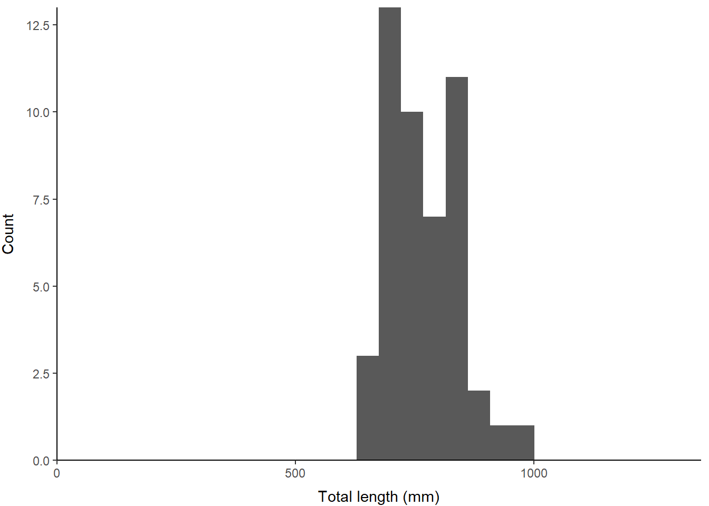

6.1 One-sample tests
Sometimes, we are interested in simply knowing whether or not the measurements we’ve obtained from an individual or a group are representative of a larger population. For example, we may have a ‘control’ group in an experiment and we want to know if the group is truly representative of the population average or some measurement we have collected from a different biological population. For these situations, we will rely on one-sample tests this week and we’ll look at other (totally related) options moving forward.
6.1.1 One sample t-test
We will examine parametric and non-parametric examples of one-sample tests here to demonstrate why and how we use them.
Let’s start with a simple example of how we might do this, and what the results actually mean. We’ll use some data from grass carp (Ctenopharyngodon idella) from Lake Gaston, Virginia and North Carolina, USA for this example. We will compare the size of grass carp at specific ages with their population density using a few different tools
Read in the data set:
grasscarp <- read.csv('data/grasscarp.csv')Just for funsies, you could also read this in directly from the link to the raw data in the GitHub repository for this book if you have an internet connection:
grasscarp <- read.csv('https://raw.githubusercontent.com/danStich/worst-r/master/data/grasscarp.csv')Remember to check out the data set in your Environment tab so you understand how many observations there are and how many variables (as well as their types).
Let’s start by asking a simple biological question: is the size of age-3 grass carp different from the average size of fish in this population?
First, let’s create a sample that includes only age-3 fish. We will store this to a new vector called age3_lengths.
age3_lengths <- grasscarp$Length[grasscarp$Age == 3]Now, let’s compare the Length of age-3 fish to the rest of the population using a one-sample t-test. To do this, we need to pass age3_lengths to the t.test() function as our observed x. We’ll also specify that we want to compare the observed sample to the population mean (mu) that we specify on the fly. We will tell R to use a default confidence level (conf.level) of 95%. Finally, we will save the output of our test to a new object, creatively named our_test.
# Run the test and save the output to an object
our_test = t.test(age3_lengths,
mu = mean(grasscarp$Length),
conf.level = 0.95
)
# Print the results of the object to the console
print(our_test)##
## One Sample t-test
##
## data: age3_lengths
## t = -18.829, df = 47, p-value < 2.2e-16
## alternative hypothesis: true mean is not equal to 973.0118
## 95 percent confidence interval:
## 749.2547 792.4536
## sample estimates:
## mean of x
## 770.8542Okay, so what does that mean???
First, let’s look at what we’ve done here.
We’ve conducted a one-sample t-test.
The null hypothesis was that:
(H0): the sample (age-3 fish) did not differ in
Lengthfrom the mean of the population.
This is because we stated no specific alternative hypothesis when we executed the t-test above. If we had used a different alternative hypothesis (i.e. greater or less in the argument alternative) then our null would be formalized as: “The length of age-3 fish is not significantly greater (or less) than the population mean”.
Finally, we specified the confidence level. Here, we are told R that we want to know the result with a confidence level of 95% (0.95). This corresponds to a Type-I error rate (\(\alpha\)) of 0.05. This means we are looking for p < 0.05 to conclude that the sample is statistically different from the population mean. Since p < 0.001, we reject the H0 and conclude that age-3 fish are significantly shorter than the population mean.
6.1.1.1 Output
R returns the output of statistical tests as objects, and you can reference any part of those objects by name or index. The type of object that R returns, and how you access the parts depends on the type of test you ran and with what options.
Like so many other models objects, our one sample t-test is stored as a list:
str(our_test)## List of 10
## $ statistic : Named num -18.8
## ..- attr(*, "names")= chr "t"
## $ parameter : Named num 47
## ..- attr(*, "names")= chr "df"
## $ p.value : num 1.57e-23
## $ conf.int : num [1:2] 749 792
## ..- attr(*, "conf.level")= num 0.95
## $ estimate : Named num 771
## ..- attr(*, "names")= chr "mean of x"
## $ null.value : Named num 973
## ..- attr(*, "names")= chr "mean"
## $ stderr : num 10.7
## $ alternative: chr "two.sided"
## $ method : chr "One Sample t-test"
## $ data.name : chr "age3_lengths"
## - attr(*, "class")= chr "htest"We can just look at the names if there are specific pieces in which we are interested. For example, we might want to save the p-value (p.value):
# Shows us the names of the things inside the model list
names(our_test) ## [1] "statistic" "parameter" "p.value" "conf.int"
## [5] "estimate" "null.value" "stderr" "alternative"
## [9] "method" "data.name"# This stores our p-value to an object for use
p_out = our_test$p.value
# And of course we can look at it
print(p_out) ## [1] 1.572767e-23Now we can go through the output as it is displayed by:
# Print a summary of the test
print(our_test)##
## One Sample t-test
##
## data: age3_lengths
## t = -18.829, df = 47, p-value < 2.2e-16
## alternative hypothesis: true mean is not equal to 973.0118
## 95 percent confidence interval:
## 749.2547 792.4536
## sample estimates:
## mean of x
## 770.8542The first line of the output gives us the actual data that with which we are working- nothing of interest here other than a quick sanity check until later on in the course.
The second line shows the ‘statistics’ that we are interested in: t is the calculated value of the test statistic for the t-test in this case. The df, or degrees of freedom, is the number of observations in the sample, minus the number of parameters that we are estimating (in this case, just one: the mean). Our p-value is the probability of observing data that are more extreme than what we observed if the null hypothesis is in fact true (i.e. the probability that rejection of the null is inappropriate). Again, because it is smaller than \(\alpha\) we reject the null and accept the alternative hypothesis.
Our alteranive hypothesis (HA) was that the sample mean is not equal to population mean. We can specify other alternatives (and therefore nulls) in this and other models in R.
Finally, R reports the mean and the 95% confidence interval of age3_lengths.
6.1.1.2 Assumptions
It’s always important for us to think about the assumptions that we are making when (read before) conducting a statistical test. First, there are implicit assumptions that we make. For example, we assume that the data are representative of what we are trying to measure and were collected in a random manner with respect to other potentially confounding factors in this case. Then, there are explicit assumptions that we make for specific tests.
For the one-sample t-test, the assumption that we really care about is:
- The data are normally distributed
The t-test is generally robust to violations of this assumption provided that sample sizes are large enough (Google “Central Limit Theorem”, this is The Worst Stats Text eveR). But, it is always good to check. In particular, when we are working with small sample sizes like this example (n = 48), we should really make sure that things look okay or find an alternative tool.
6.1.1.3 Checking assumptions
Visual check for normality
One simple way to assess our assumption of normality is to look at a plot of the data. As you will see later, we are usually concerned with the residuals, but we can look at the actual data here because we have only one group and if it’s normal so are its errors.
Have a quick look at these to see what we are working with using the histogram code from Chapter 4. I set the x-axis limits below using the maximum Length from the grasscarp data so we can see what part of the length range we’ve sampled here.
ggplot() +
geom_histogram(aes(age3_lengths), bins = 30) +
scale_x_continuous(limits=c(0, max(grasscarp$Length)), expand = c(0, 0)) +
scale_y_continuous(expand = c(0, 0)) +
xlab("Total length (mm)") +
ylab("Count") +
theme_classic() +
theme(
axis.title.x = element_text(vjust = -1),
axis.title.y = element_text(vjust = 3),
panel.grid = element_blank()
)
Sure, looks totally normal to me? Wouldn’t it be great if there were a statistical test for determining whether this sample is different from the normal? Great that you should ask.
6.1.1.3.1 Tests of normality (Shapiro-Wilk)
The Shapiro-Wilk test is commonly used to test normality of a distribution as a check of assumptions. We can use this to test whether our data deviate from normal in the following manner:
shapiro.test(age3_lengths)##
## Shapiro-Wilk normality test
##
## data: age3_lengths
## W = 0.95715, p-value = 0.07746First, note that the test statistic is the W statistic for this test.
Second, we have a p-value of 0.0774637. Oh, no! Wait, what does that mean?
For this test, we actually don’t want p < 0.05 if we are relying on assumptions of normality, so this is a “good” thing. But, it doesn’t necessarily mean age3_lengths is normally distributed. It just means that we can’t tell if the sample we have collected is different from normal (we fail to reject the null but can’t “accept” it). I guess that is good enough, but that p-value is awfully close to 0.05 for my taste.
So, are we up that proverbial tributary without a paddle, or can we salvage the mess and move on with life? Don’t worry, there’s a statistical test for that, too.
6.1.2 Wilcox test
You can think of the Wilcox test as a non-parametric analog of the t-test. In general, non-parametric tests tend to be slightly more “conservative” than the parametric alternatives because they require fewer assumptions. However, non-parametric tests can be useful where our data are not normal, or we don’t feel we have sufficient data to say this with confidence (hmm…maybe don’t conduct any tests in that case!).
For the Wilcox test, we are checking for shifts in the median (not the mean) of one or more samples.
Why is this? The mean of a non-normal distribution is not always a useful descriptor of the probability mass under a distribution (it still describes ‘central tendency’ but does not necessarily describe the place where ‘most of the data are’). But, the median always (as in always, always, always) describes central tendency of the data, so we can pretty much use it for describing any sample. This is because the median is defined as the “middle” value. That is, half of the data should fall on either side of the median if you lined up all of your data on the equator (wrong metaphor?).
…back to the Wilcox test.
# First, do this and have a quick read:
?wilcox.testWe can use this test to see if the median length of age-3 fish is statistically different from the median value of length in the sample.
wilcox.test(
age3_lengths,
mu = median(grasscarp$Length),
alternative = 'less', # Note different alternative here!
exact = FALSE # Not much data, so not exact
)##
## Wilcoxon signed rank test with continuity correction
##
## data: age3_lengths
## V = 0, p-value = 8.414e-10
## alternative hypothesis: true location is less than 1007Interpreting the results is essentially the same as for the t-test, but without the degrees of freedom, so we won’t belabor this. Importantly, the test, being robust to any distributional assumptions, should also (and does) tell us that the length of age-3 fish is significantly shorter than the population mean (or median - whichever you used).